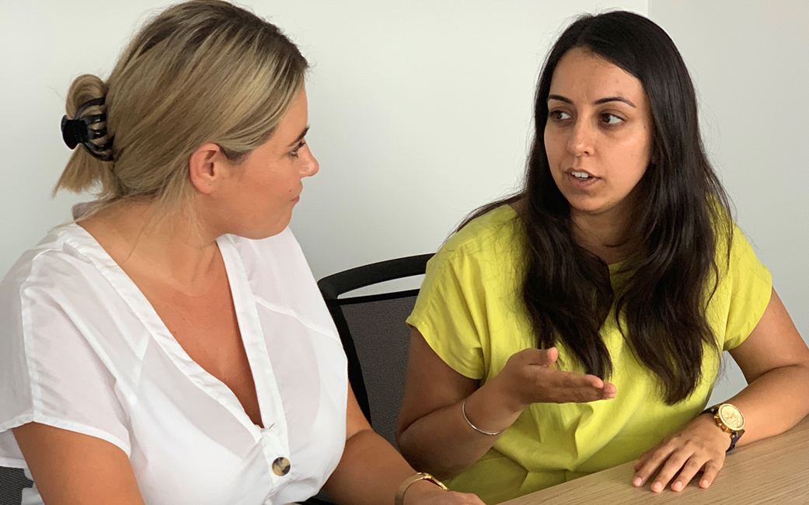

People
Marie Lee is passionate and committed to helping hospitals reduce their patient waiting times. Marie was one of the original founders and CEO of Medinet Insourcing business, treating more than 620,000 patients across the UK and Ireland.
Marie has worked with more than 100 Hospitals across the UK and Ireland, helping to reduce patient waiting times through cost effective solutions. She is supported by a team of experienced clinicians, including Dr Graham Turner, Medical Advisor for Totally Healthcare and Consultant Gastroenterologist at the Belfast Health and Social Care Trust.

Dr Turner qualified in 1996 and has been based at both the Royal Victoria Hospital and Belfast City Hospital since 2009, having previously been a consultant at Altnagelvin Hospital from 2006. He is Clinical Lead for Endoscopy and Gastroenterology at the Belfast Trust since 2012.
Over his career and training Graham has worked throughout Northern Ireland and completed an MD thesis in Neuroendocrine Tumours in 2004. He has also been a Clinical Fellow in Perth Australia and at UCH London. His clinical interests are Nutrition, Inflammatory Bowel Disease and Endoscopy, he is a Bowel Cancer Screening Endoscopist in Belfast.
As well as his Trust roles, Graham is currently working with the Dept of Health in Northern Ireland on Elective Day Case Centres in Endoscopy and the Regional Cancer Strategy Group for Diagnostics. He is also Medical Advisor for Crohn’s and Colitis UK in Northern Ireland. More recently he was delighted to join the team at Totally Healthcare where he is actively involved in their exciting developments in endoscopy.

Kaye has 36 years of nursing experience in the NHS and is dedicated to consistently ensuring a high-quality patient experience. Kaye has specialised in Gastroenterology and Endoscopy since 1998 and became an Advanced Endoscopy Practitioner in 2006.
She is a highly experienced trainer in Endoscopy and Independent reader and reporter of capsule endoscopy for the largest service in Europe.
Kaye has successfully provided endoscopy leadership and management for endoscopy insourcing in the independent sector and is very excited to be leading the nursing division for Totally Healthcare.
Totally Healthcare sits within the framework of Totally plc which provides the organisation with board level assurance as well clinical and business support from Totally’s corporate team, including: business development, clinical governance, corporate assurance, finance, information management and technology, human resources and organisational development. For further information about the Totally plc board visit the Totally plc website For further information about the Totally plc board visit the Totally plc website
Working with us
We are always looking to increase our team of highly skilled professionals to meet the extremely high demand for contracts across the UK and Ireland.
If you are interested in providing excellent patient care alongside a supportive team of experienced healthcare professionals, please contact a member of the team at recruitment@totallyhealthcarelimited.com who will discuss the registration requirements with you and are there to support you through the process.
Consultants
We are looking for Consultants in all specialties to join our rapidly expanding network of highly motivated and dedicated healthcare professionals
Nurses and Allied Health Professionals
We are always looking to increase our team of highly skilled professionals to meet the extremely high demand for contracts across the UK and Ireland.